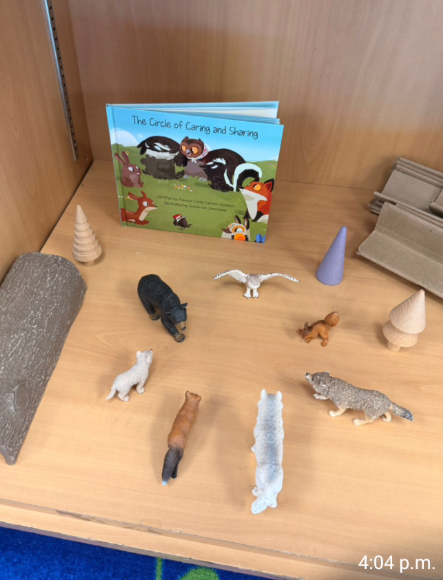
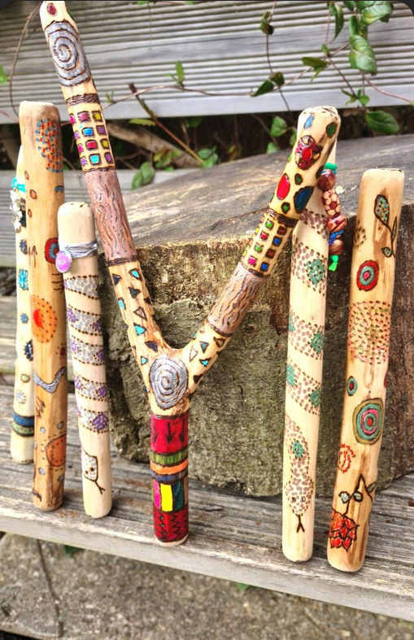
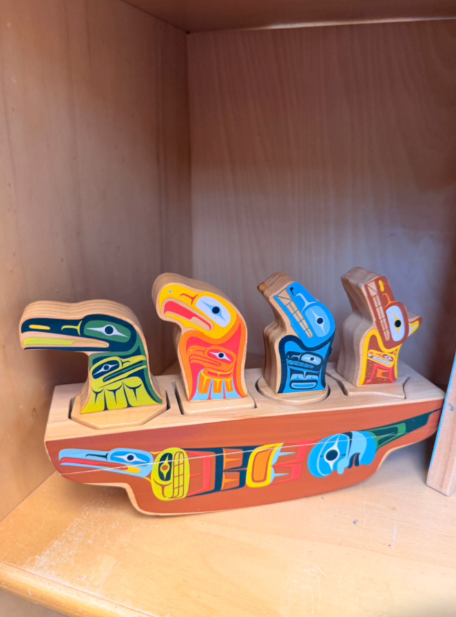
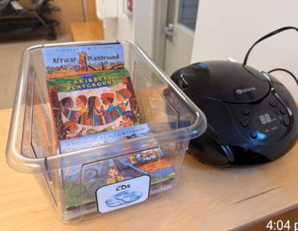
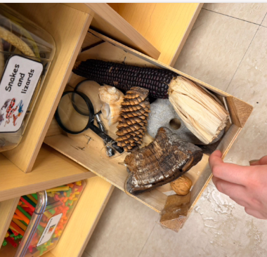

Classroom & Early Childhood Applications
Storytelling can be thoughtfully woven into everyday classroom and early childhood practice through books, materials, music, discussion, and experiences connected to the land. In these settings, storytelling is not treated as a simple teaching tool, but as a relational and meaningful way of learning with children, grounded in Indigenous pedagogies that emphasize connection, reflection, and responsibility (Archibald, 2008; see References).
These applications emphasize listening, reflection, creativity, and connection. Children are invited to engage with stories in different ways and to make meaningful links between stories, their experiences, their communities, and the natural world.
Storytelling Through Books
Picture books can open space for conversations about identity, nature, relationships, and belonging. Books such as Benjamin Grows a Garden, I Am Connected, and Birdsong invite children to think about caring for the land, noticing connections, and reflecting on their own experiences.
These stories can be shared through read-alouds, small-group conversations, or quieter reflective moments. Rather than focusing on one correct interpretation, educators can encourage children to wonder, respond, and make personal connections, supporting meaning-making and relational learning (Gerlach, 2018; see References).


Animal Figurines and Storybooks
Animal figurines can be used alongside storybooks to help children retell stories, explore relationships, and represent ideas in concrete ways (Gerlach, 2018; see References).
Example: After reading a story, children might use animal figurines to retell key moments and then share their version with others in a small group. Educators can invite children to listen to each other’s interpretations and notice similarities and differences, supporting shared meaning-making and respectful listening.

Wooden Storytelling Pieces
Wooden storytelling materials such as talking sticks, drums, and figures support listening, reflection, and relational learning (Archibald, 2008; see References).
Example: A talking stick can be used during circle time so each child has a turn to speak while others listen without interruption. This helps create a respectful space where stories are shared and received with care.

Puzzles and Visual Materials
Visual storytelling materials support observation, interpretation, and multiple ways of expression (CAST, 2024; see References).
Example: Children might select story stones or puzzle images and work together to create a shared story. Educators can encourage children to explain what each image represents and how it connects to the story.

Storytelling Through Music and Listening
Listening experiences support storytelling through reflection, movement, and multimodal engagement (CAST, 2024; see References).
Example: During circle time, children might listen to music and quietly imagine a story. After listening, they can share, draw, or act out their story through movement.

Connecting to Land and Nature
Natural materials support storytelling connected to relationships with the land (Archibald, 2008; Gerlach, 2018; see References).
Example: Children explore items such as seeds, pinecones, and stones and discuss what they do. They might talk about how seeds grow into plants or how pinecones protect seeds, then build a land scene and tell a story about it.
